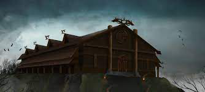
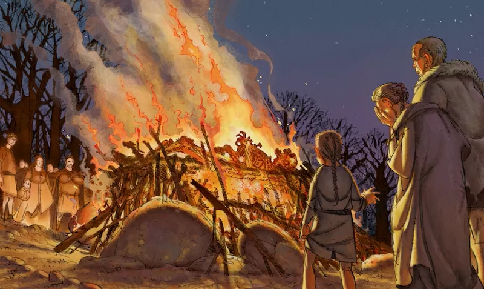

To start off the major reason that the poem of Beowulf is so important and the fact that everyone in some capacity has heard of it is, it is the oldest surviving original Old English work. This means to try and get a better understanding of what life was like at the time we could read this work. Without a doubt some of the things that happen in the poem are exaggerated, but others such as the heroic ideal and the idea of kinship run rampant throughout it.
Another big thing that it does for the world of literature is it has a very apparent Christian author writing for their Christian audience about a group of mainly non-Christians and still make it seem like the villagers are not the villains of the story. We can see that throughout the text due to the many references of "God" or the "Lord". Then another way that we see this internal conflict come out in the writing is with "Fate or Free Will", in the story Beowulf is always proclaiming that it was his "fate" that won the day for him and that it was destined. I believe that this is more a Christian idea because God is supposed to be the defender of his people, but I believe if it was the actual people that Beowulf is representing that they would believe in the free will due to the fact most non-Christians at the time believed in multiple gods and beings so there would be no guarantee that they would have someone looking out for them.
 